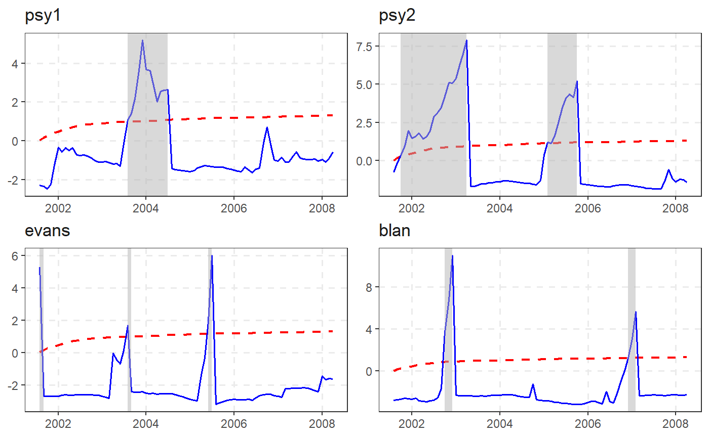

autoplot.radf takes an radf object and returns a (list of ) ggplot2 objects.
fortify.radf takes an radf object and converts it into a data.frame.
ggarrange is a wrapper of arrangeGrob(), which can be
used directly after autoplot to place grobs on a page.
# S3 method for radf autoplot(object, cv, include = FALSE, select = NULL, option = c("gsadf", "sadf"), min_duration = 0, ...) # S3 method for radf fortify(model, data, cv, include = FALSE, select = NULL, option = c("gsadf", "sadf"), ...) ggarrange(...)
| object | An object of class |
|---|---|
| cv | An object of class "cv". The output of |
| include | If not FALSE, plot all variables regardless of rejecting the NULL at the 5% significance level. |
| select | If not NULL, only plot with names or column number matching this regular expression will be executed. |
| option | Whether to apply the "gsadf" or "sadf" methodology. Default is "gsadf". |
| min_duration | The minimum duration of an explosive period for it to be reported. Default is 0. |
| ... | further arguments passed to method, ignored. |
| model | An object of class |
| data | original dataset, not used (required by generic
|
dta <- cbind(sim_dgp1(n = 100), sim_dgp2(n = 100)) dta %>% radf() %>% autoplot() %>% ggarrange(ncol = 2)#> # A tibble: 81 x 4 #> index `Series 1` `Series 2` cv #> <dbl> <dbl> <dbl> <dbl> #> 1 20 -1.19 -2.14 0.0254 #> 2 21 -1.27 -1.61 0.104 #> 3 22 -1.14 -1.22 0.236 #> 4 23 -1.34 -0.580 0.258 #> 5 24 -1.33 -0.000996 0.258 #> 6 25 -1.34 0.764 0.283 #> 7 26 -1.38 1.37 0.283 #> 8 27 -1.42 2.39 0.298 #> 9 28 -1.30 2.68 0.378 #> 10 29 -1.54 3.86 0.378 #> # ... with 71 more rows